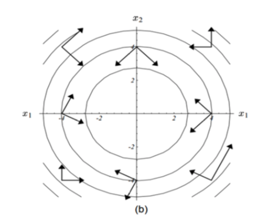

Chapter 14 从梯度下降到共轭梯度 {Conjugate gradient}
线性方程组 \(Ax =b\) 除了高斯消元法以外，还有一些很有趣的迭代解法, 比如雅可比法（Jacobi Method），高斯－赛德尔迭代（Gauss–Seidel method）。
这里只针对 A 满足 对称 (\(A^T = A\)), 正定（即 \({\displaystyle \forall {\vec {x}}\neq 0,{\vec {x}}^{T}A{\vec {x}}>0}\)），并且是实系数的，那么我们可以用 梯度下降 和共轭梯度来解线性方程组 ：
\[Ax = b\]
14.1 梯度下降 Gradient descent
梯度下降（Gradient descent）完全配得上大名鼎鼎四个字，它这么大名鼎鼎是因为在 Machine Learning 中大放光彩。
梯度下降是用于找到可微函数的局部最小值的一阶迭代优化算法。 为了使用梯度下降找到函数的局部最小值，我们采取与该函数在当前点的梯度（或近似梯度）的负值成比例的步骤。 但是，如果我们改为采取与梯度的正比成比例的步骤，则会逼近该函数的局部最大值。 该过程称为梯度上升。
梯度下降本身的数学原理还是比较简单，还有这里虽然叫 ‘梯度下降’ 来找局部最小值，其实我们走的是 梯度 的负方向，因为 梯度 本身指向的方向是函数 \(f: \mathbb{R}^n \to \mathbb{R}\) 增加的最快的方向。
就像一元函数的导数表示这个函数图形的切线的斜率，如果多元函数在点 P 上的梯度不是零向量，它的方向是这个函数在 P 上最大增长的方向，而它的量是在这个方向上的增长率。
考虑函数：
\[ f(\vec{x}) = \frac{1}{2} \vec{x}^TA\vec{x} - \vec{b}^T \vec{x} + c \]
如果我们要求 \(f(\vec{x})\) 的最小值，那么：
\[ \nabla f(\vec{x}) = A\vec{x} - \vec{b} \]
梯度下降法要做的是：
- \(\vec{d}_k = -\nabla f(\vec{x}_{k-1}) = \vec{b} - A \vec{x}_{k-1}\)
- \(\vec{x}_k = \vec{x}_{k-1} + \alpha_k \vec{d}_k\), 选择最合适的 \(\alpha_k\) 使得 \(f(\vec{x}_k) < f(\vec{x}_{k-1})\)
对于 \(\alpha_k\):
\[ \begin{aligned} g(\alpha) &= f(\vec{x} + \alpha \vec{d}) \\ &= \frac{1}{2} (\vec{x} + \alpha \vec{d})^T A (\vec{x} + \alpha \vec{d}) - \vec{b}^T (\vec{x} + \alpha \vec{d}) + c \\ &= \frac{1}{2} (\vec{x}^T A \vec{x} + 2 \alpha \vec{x}^T A \vec{d} + \alpha^2 \vec{d}^T A \vec{d}) - \vec{b}^T \vec{x} - \alpha \vec{b}^T \vec{d} + c \\ &= \frac{1}{2} \alpha^2 \vec{d}^T A \vec{d} + \alpha (\vec{x}^TA\vec{d} - \vec{b}^T\vec{d}) + const \end{aligned} \]
对 \(\alpha\) 求导：
\[ \begin{aligned} \frac{d g(\alpha)}{d \alpha} &= \alpha \vec{d}^T A \vec{d} + (\vec{x}^TA\vec{d} - \vec{b}^T\vec{d}) \\ &= \alpha \vec{d}^T A \vec{d} + \vec{d}^T A\vec{x} - \vec{d}^T \vec{b} \\ &= \alpha \vec{d}^T A \vec{d} + \vec{d}^T (A\vec{x} - \vec{b}) \end{aligned} \]
令上面的式子为0：
\[ \alpha = \frac{\vec{d}^T (\vec{b} - A\vec{x} ) } {\vec{d}^TA\vec{d}} \]
有 \(\vec{d}_k = \vec{b} - A \vec{x}_{k-1}\)， 所以：
\[ \alpha_k = \frac{\vec{d}_k^T \vec{d}_k } {\vec{d}^T_kA\vec{d}_k} \]
总结算法：
\[ \vec{d}_k = \vec{b} - A \vec{x}_{k-1} \\ \alpha_k = \frac{\vec{d}_k^T \vec{d}_k } {\vec{d}^T_kA\vec{d}_k} \\ \vec{x}_k = \vec{x}_{k-1} + \alpha_k \vec{d}_k \]
这个算法本身不是特别常用，它的收敛速度取决于 \(AA^T\) 的最大与最小特征值之比。
14.2 共轭梯度 Conjugate gradient
为什么梯度下降没有那么常用呢？ 因为我们有共轭梯度。
绿色是梯度下降的路线，红色是共轭梯度的路线，明显共轭梯度走的次数少一些/更快收敛。
梯度下降在下降的过程中会走 z 字，感性的想一想这是合理的，比如我在这个方向走到最多的下降的，再朝这个方向走我们就不是下降了，所以当然我们接下来就会走朝它垂直的方向。
而共轭梯度，它好像更聪明一点，在这张图中，n = 2, 走完第一步，下一步它就直接走到了最小值。
作为更像call 共轭梯度 API 的人，暂时我也没有完全数学的理解它，下面这个链接有具体的背景和数学推导：
感性的理解一下，就是共轭梯度这里的关键是需要理解‘共轭(conjugate)’，向量 \(\vec{u}\) 和 \(\vec{v}\) 是共轭的 （相对于A ）如果满足：
\[ \vec{u} ^{\mathsf {T}}\mathbf {A} \vec {v} =0. \]
下面这张图，里面的两两向量都是针对所在梯度处的矩阵‘共轭’的：
conjugate_02.png
当我们把梯度变换一下，就更明显的看出‘共轭’其实也就是某种正交：

这种正交带给我们的好处是更甚于上面的梯度下降的，我们可以一次在某个共轭的方向走到头，然后下一次就无需再走走过的共轭方向。
算法-from wikipedia：
\[ \begin{aligned} & \mathbf{r}_0 := \mathbf{b} - \mathbf{A x}_0 \\ & \hbox{if } \mathbf{r}_{0} \text{ is sufficiently small, then return } \mathbf{x}_{0} \text{ as the result}\\ & \mathbf{p}_0 := \mathbf{r}_0 \\ & k := 0 \\ & \text{repeat} \\ & \qquad \alpha_k := \frac{\mathbf{r}_k^\mathsf{T} \mathbf{r}_k}{\mathbf{p}_k^\mathsf{T} \mathbf{A p}_k} \\ & \qquad \mathbf{x}_{k+1} := \mathbf{x}_k + \alpha_k \mathbf{p}_k \\ & \qquad \mathbf{r}_{k+1} := \mathbf{r}_k - \alpha_k \mathbf{A p}_k \\ & \qquad \hbox{if } \mathbf{r}_{k+1} \text{ is sufficiently small, then exit loop} \\ & \qquad \beta_k := \frac{\mathbf{r}_{k+1}^\mathsf{T} \mathbf{r}_{k+1}}{\mathbf{r}_k^\mathsf{T} \mathbf{r}_k} \\ & \qquad \mathbf{p}_{k+1} := \mathbf{r}_{k+1} + \beta_k \mathbf{p}_k \\ & \qquad k := k + 1 \\ & \text{end repeat} \\ & \text{return } \mathbf{x}_{k+1} \text{ as the result} \end{aligned} \]
wikipedia 上也能找到 共轭梯度法 的 MATLAB 代码。
这个知乎回答也很好：
14.3 总结
针对
\[ Ax = b \]
因为 A 的不同性质，我们可以有不同的选择：
- 矩阵稠密，或者数量级较小（dense and/or small）： 高斯消元法
- 矩阵稀疏，数量级很大（large and sparse, or not available ex- plicitly）：如果矩阵没有一些特殊的性质（实对称正定），那一般来说是没什么好的办法，考虑使用迭代法
- 带状矩阵（narrow-banded）：要看是那种带状，如果是比如这样，只有对角线和对角线上方和下面的一条或者两条，那么高斯消元法应该还行：
Tridiagonal matrix:
\[ \begin{pmatrix} a_1 & b_1 \\ c_1 & a_2 & b_2 \\ & c_2 & \ddots & \ddots \\ & & \ddots & \ddots & b_{n-1} \\ & & & c_{n-1} & a_n \end{pmatrix} \]
Pentadiagonal matrix：
\[ {\displaystyle {\begin{pmatrix}c_{1}&d_{1}&e_{1}&0&\cdots &\cdots &0\\b_{1}&c_{2}&d_{2}&e_{2}&\ddots &&\vdots \\a_{1}&b_{2}&\ddots &\ddots &\ddots &\ddots &\vdots \\0&a_{2}&\ddots &\ddots &\ddots &e_{n-3}&0\\\vdots &\ddots &\ddots &\ddots &\ddots &d_{n-2}&e_{n-2}\\\vdots &&\ddots &a_{n-3}&b_{n-2}&c_{n-1}&d_{n-1}\\0&\cdots &\cdots &0&a_{n-2}&b_{n-1}&c_{n}\end{pmatrix}}\,.} \]
但是如果是类似带状,但是还有一些其它的非0项在矩阵中的话，那么我们就需要考虑矩阵的性质了。
- 实对称正定，稠密，数量级小（symmetric positive definite，dense and/or small）： Cholesky 分解
- 实对称正定，稀疏，数量级大（symmetric positive definite，large and sparse）： 毫无疑问，共轭梯度！
- 对称不定，稠密，数量级小（symmetric indefinite, dense and/or small）：Bunch–Kaufman
- 对称不定，稀疏，数量级大（symmetric indefinite, large and sparse）： MINRES
- 不对称，稀疏，数量级大（nonsymmetric, large and sparse）： GMRES，BiCGSTAB or IDR
参考：
- https://en.wikipedia.org/wiki/Gradient_descent
- https://en.wikipedia.org/wiki/Conjugate_gradient_method
- Solution of Linear Systems via Chen Greif